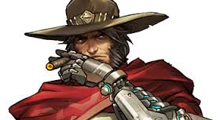
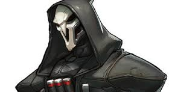
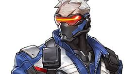
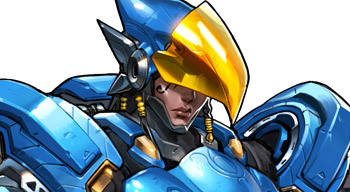

Genji has the most maneuverability out of all of the hero's in overwatch. Genji has 200 health and his abilities consist of his dash and his deflect. The dash's cooldown is 8 seconds and Genji's deflect lasts 2 seconds and it takes 8 seconds to recharge. His dash can go through enemies doing damage and once Genji kills someone his dash, if not charged, is restored. Genji's reflect can deflect most ultimates and abilities. He can also deflect any projectile so lasers are his weak point. What makes Genji so maneuverable is his double jump and his ability to climb up walls. Genji's ultimate is his katana or dragonblade which he pulls out and does 120 damage per hit. Once he is in his ultimate he recharges his dash ability. Genji's primary weapon is his shurikens. These shurikens have two ways to throw them. You can throw them in a straight line or in a fan. Genji only throws three shurikens at a time with the ammo being 24.
Mccree is the best in the west according to the game. Mccree is a cowboy character with 200 health who has a revolver and flashbangs. His flashbang is an area of effect ability, it lasts .7 seconds and it takes 10 seconds to recharge. His other ability is a roll, hiis roll once used reloads his revolver instantly and takes 8 seconds to recharge. Mccree's main weapon is his revolver which can be used two different ways. His main fire is shooting 1 bullet at a time and can be used at great range. Mccree's alt fire is his fan the hammer, which is a great burst of bullets, that often used at point blank range. Mccree's ultimate is called deadeye which targets all characters that is in his field of vision and does 250 damage which instakills any offense and some defense heros.
Reaper has already been killed and is back to haunt the living. Reaper is a character with 250 health that unloads his shotguns into people. His abilities are called wraith form, shadow step, and the reaping. Reaper's wraith form ability lasts 3 seconds and 8 seconds to cool down. His wraith form allows him to take no damage and can walk through enemies. Reaper's shadow step is a form of teleport to get to a place faster. The range is 35m in Reapers field of view. Reapers shadow step lasts two seconds to get to one place to another and has a cooldown of 10 seconds. The reaping ablity is always active and what it does is once a hero is killed a soul will drop. Reaper's can pick up the souls to regain 50hp. Reaper's ultimate ability is called death blossom and is a area of effect ability which deals 170 damage per second and has a range of 8 meters and lasts 3 seconds. Reapers shotguns do 140 damage per body shot and he has 8 ammo.
Soldier 76 faked his death and he was Jack Morrison the leader of Overwatch. Soldier 76 has 200 health and three abilities: sprint, biotic field, and his helix rockets. His sprint lasts forever as long as you hold down the button, although cannot fire helix rockets while sprinting. Soldiers biotic field heals in a radius and heals 40hp per second and lasts 5 seconds and has a cool down of 15 seconds. Soldiers helix rockets do 120 damage and has an area of effect of 2 meters. The helix rockets have a cool down of 8 seconds. Soldier 76's ultimate ability is called tactical visor. His tactical visor is an aimbot for him so he doesn't have to aim and he does his regular damage but cannot miss. Soldier's machine gun does 6-20 damage and his ammo is 25 and is fully automatic.
Pharah is the daughter of Ana and she flys in the sky with her suit. Pharah has 200 health and has three abilities: hover, jump jet, and concussion blast. Pharah's jump jet ability boosts her about 20 meters vertically into the sky. Pharah's jump jet has a cooldown of 10 seconds and with Pharahs hover ability as long as you hold down the jump button in the air she will start to go up but only for a limited time until recharged. Pharahs concussuion blast does not do damage but has knockback and has a radius of 8 meters and has a cooldown of 12 seconds. Pharah's ultimate ability is called barrage and does a burst of rockets that do 40 damage per rocket and that lasts 3 seconds although pharah stays still while in her ult. Pharah's rocket launcher does 120 damage if a direct hit, 30-80 splash damage, and can do 40 damage to herself. The rocket launcher has 6 ammo and the area of effect is 3 meters.